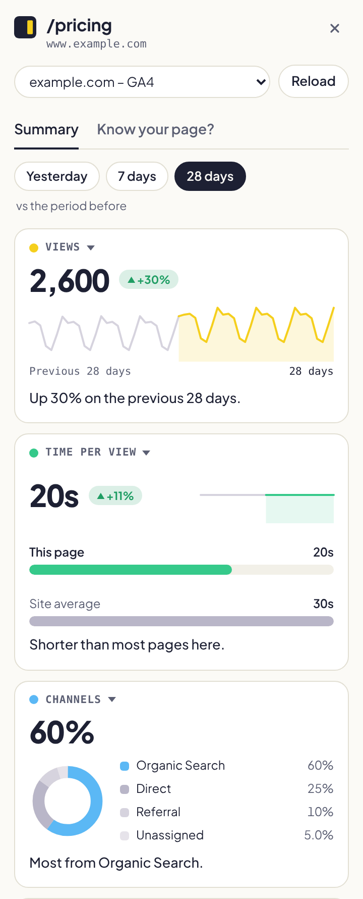

A Chrome side panel for Google Analytics 4
You are on the page. Its numbers should be right here.
Click the icon on any page of your site and SideNote Analytics shows how that page is doing: views, visitors, where they come from, and how it compares with the period before. No reports to build, no filters, no property to pick.
Free. Read-only. Your data stays between Google and your browser.

Four cards, your choice
The four numbers you care about, for every page.
Pick any four of sixteen metrics. The menu shows how each one moved, so you can spot what changed before you even choose. Your picks follow you to every page and every Chrome you sign in to.
- TrafficViews, users, sessions, new users
- EngagementTime per view, engagement rate, bounce rate, views per visit
- Where they come fromChannels, referring sites, organic search
- Who they areDevices, countries, new vs returning
- ResultsKey events, share of the site, entry share

Yesterday, 7 days or 28 days
Run your cursor along the line.
Every card has a trend line for the period and the one before it. Hover anywhere over it and the big number turns into that day's figure, like a stock chart. Move away and it comes back.
- Yesterday
- against the day before, with a week of trend
- 7 days
- against the 7 days before
- 28 days
- against the 28 days before

Know your page?
Five questions about your own page. How well do you know it?
Mostly mobile or desktop? Did views go up or down? Where do most visitors come from? The quiz draws five questions from the page's real numbers and shows the answer as a chart. Your last score is kept for each page.
"Challenge a friend" copies a line with your score. It never mentions your site.

Honest numbers
When the data is thin, the panel says so.
- Missing is never zero.An empty report shows as "no data", not as 0 views.
- No percentages on tiny bases.Going from 3 visits to 9 is not shown as +200%.
- Sampling is flagged.When GA4 samples or groups rows into "(other)", the figure is marked as an estimate.
- Guesses are labelled.The panel finds your GA4 property from the page's address. If it had to guess, it says so, and you can pick another.
Private by design
Read-only. Your data stays between Google and this browser. Nowhere else.
Servers. The panel talks to Google's Analytics APIs directly from your browser.
Trackers. No analytics, ads or tracking code of its own.
Permission to Google: read-only Analytics access. It cannot change anything in your account.
Settings to fill in. It matches the page's address to your GA4 property by itself.